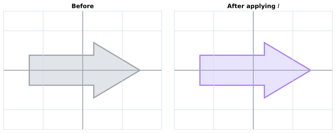

Code
import matplotlib.pyplot as plt
import numpy as np
from matplotlib.patches import Polygon
def arrow_vertices(scale=1.0):
return scale * np.array(
[
[-1.35, -0.38],
[0.28, -0.38],
[0.28, -0.70],
[1.45, 0],
[0.28, 0.70],
[0.28, 0.38],
[-1.35, 0.38],
]
)
def draw_grid(ax):
for value in np.arange(-2, 2.1, 1):
ax.axhline(value, color="#d8dee8", linewidth=1)
ax.axvline(value, color="#d8dee8", linewidth=1)
ax.axhline(0, color="#9aa4b2", linewidth=1.6)
ax.axvline(0, color="#9aa4b2", linewidth=1.6)
fig, axes = plt.subplots(1, 2, figsize=(9.5, 3.6), constrained_layout=True)
for ax, title, edge_color, fill_color in [
(axes[0], "Before", "#6b7280", "#d1d5db"),
(axes[1], r"After applying $I$", "#7c3aed", "#ddd6fe"),
]:
draw_grid(ax)
ax.add_patch(
Polygon(
arrow_vertices(),
closed=True,
facecolor=fill_color,
edgecolor=edge_color,
linewidth=2.4,
alpha=0.65,
)
)
ax.set_title(title, fontsize=12, fontweight="bold")
ax.set_aspect("equal")
ax.set_xlim(-2, 2)
ax.set_ylim(-1.5, 1.5)
ax.set_xticks([])
ax.set_yticks([])
for spine in ax.spines.values():
spine.set_color("#d6dde8")
plt.show()